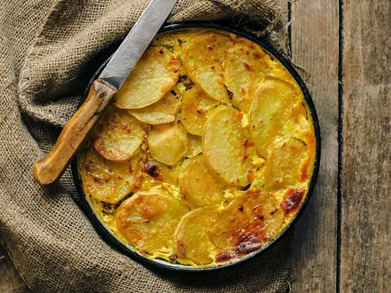

Фото: Original: Cuklev, CC BY-SA 4.0

Мусака
Греческая запеканка из баклажанов, мясного фарша и соуса бешамель
120 мин6 порц.563 ккал на порциюБ 25 · Ж 41 · У 23Средиземноморская кухня
Продукты на 6 порц.
- Баклажан3 шт
- Говяжий фарш500 г
- Лук репчатый2 шт
- Чеснок2 зуб.
- Томаты в собственном соку1 банка
- Томатная паста1 ст. л.
- Корица1 щеп.
- Оливковое масло4 ст. л.
- Сливочное масло50 г
- Мука пшеничная2 ст. л.
- Молоко2,5 стак.
- Яйцо куриное1 шт
- Мускатный орех1 щеп.
- Сыр твёрдый80 г
- Соль2 ч. л.
- Перец чёрный молотый1 щеп.
Как готовить
- Баклажаны нарежьте кружками 1 см, посолите и оставьте на 20 минут, затем промокните салфеткой.
- Разогрейте духовку до 200 °C (сильный жар). Разложите баклажаны на противне, смажьте 3 ст. л. масла и запекайте 20 минут до мягкости.
- Обжарьте лук и чеснок на оставшемся масле 5 минут, добавьте фарш и жарьте 8 минут. Положите томаты, пасту, корицу, соль и перец, тушите на слабом огне 20 минут до густоты.
- Бешамель: растопите сливочное масло, обжарьте в нём муку 1 минуту, влейте холодное молоко, постоянно помешивая, и варите 5-7 минут до густоты. Снимите с огня, остудите 5 минут, вмешайте яйцо, мускатный орех и половину тёртого сыра.
- В форму выложите половину баклажанов, весь мясной соус, затем остальные баклажаны.
- Залейте бешамелем, посыпьте оставшимся сыром.
- Запекайте при 180 °C (средний жар) 40-45 минут до тёмно-золотой корочки.
- Дайте постоять 20 минут, чтобы слои схватились, и нарежьте.
Совет. Запечённые баклажаны впитывают меньше масла, чем жареные, и мусака выходит легче. По-гречески мусаку часто делают с фаршем из баранины.